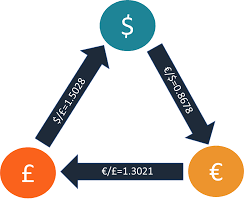

ATM Machine
This Java-based application simulates ATM operations, including account balance checks, withdrawals, and deposits. It ensures user-friendly interaction and secure transaction handling.
Technologies Used:
- Java
- OOP principles

Arbitrage Currency
An insightful Java project that explores currency exchange rate differences across markets to find arbitrage opportunities.
Technologies Used:
- Java
- Data Structures

Statistics in Python
A statistical analysis project utilizing Python's powerful libraries such as pandas and matplotlib. It analyzes and visualizes cardio fitness data.
Technologies Used:
- Python
- Pandas
- Matplotlib
Check it on GitHub: CardioGoodFitness